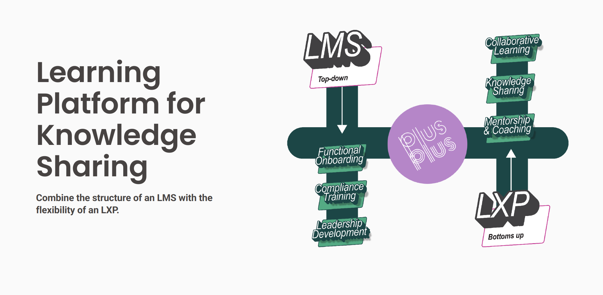
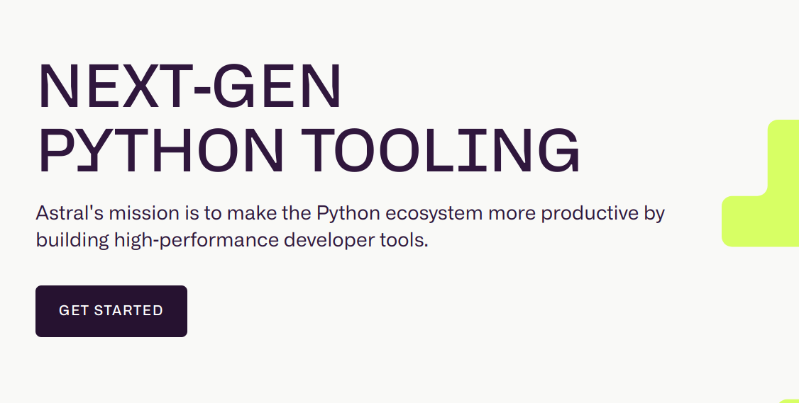
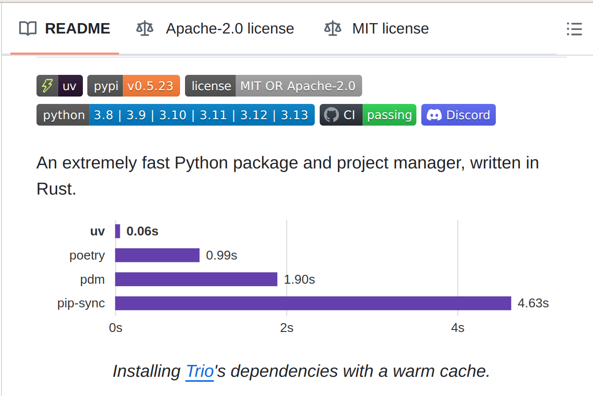

How Charlie Marsh is saving Python with Rust
Simeon Franklin
about
bio
- Simeon Franklin / https://x.com/simeonfranklin
- local boy - MJC, Stan State
- SWE, Technical Instructor, Eng Lead,
x-Xx-tweep- Formerly at the company formerly known as Twitter
PlusPlus
I am currently the Engineering Lead for a startup called PlusPlus

But opinions are my own!
Confession Time
Hi, my name is Simeon Franklin and I am a Pythonista.
Confession Time
- I like 🦆 typing and I cannot lie
- I'm still not wild about types
- I do quote from the Zen of Python (Long Live Tim Peters)
- There will probably be some Monty Python jokes
ruff
Prologue
New Project, who dis?
In 2023 I joined a startup with a large mature Python/Django codebase.
Large Python codebases can be challenging but fortunately we were all set up with tooling to enforce project coding standards.
linting tools
Including but not limited to:
- mypy (type checking)
- bandit (security scanner)
- mccabe (complexity scanner)
- pep8 (formatting)
- isort (formatting)
- black (formatting)
- pylint (formatting & code smells)
- pyflakes (code smells)
- flake8 (pep8 formatting for pyflakes)
Maturity is Good!
For every commit a variety of tools run to ensure code reviews don't bikeshed over what line the parentheses goes on or how much whitespace to put around the commas.
And also we detect a variety of bad code smells, potential security flaws, or un-pythonic code.
🎉
Downsides
- Speed: It can take several minutes to check a commit!
- Complexity: A lot of tools and a lot of configuration files
😞
Ruff
Sometime in 2023 I noticed folks on Twitter talking about a new linter Ruff.
It's written in Rust and it's supposed to be fast!
I ignored it. My project is mature and messing with linting is low on my priority list.
Try it, Maybe You'll Like it!
At some point we had a hackathon and I tried adding Ruff to my pre-commit chain as a replacement for flake8 to see if I'd notice the speed difference.
Huh
Ruff is also a drop-in replacement for black and isort and mccabe?
Ruff can replace pylint* and pyflakes too?
See https://github.com/astral-sh/ruff/issues/970 for Pylint compatibility status.
Oh yeah - and the speed claims?
Speed
Speed
Nick Schrock, founder of Elementl, co-creator of GraphQL:
Why is Ruff a gamechanger? Primarily because it is nearly 1000x faster. Literally. Not a typo. On our largest module (dagster itself, 250k LOC) pylint takes about 2.5 minutes, parallelized across 4 cores on my M1. Running ruff against our entire codebase takes .4 seconds.
Speed
Bryan Van de Ven, co-creator of Bokeh, original author of Conda:
Ruff is ~150-200x faster than flake8 on my machine, scanning the whole repo takes ~0.2s instead of ~20s. This is an enormous quality of life improvement for local dev. It's fast enough that I added it as an actual commit hook, which is terrific.
Astral
Ruff is created by a company called Astral
Founder https://x.com/charliermarsh
Ambitious

Is this ambitious?
Did Python really need another linter?
The speed gains are impressive!
And the extend and embrace attitude made a whole ecosystem of separate tools and community plugins un-necessary..
Rust & Speed
https://blog.jetbrains.com/pycharm/2023/02/ruff-python-linter-interview-with-charlie-marsh/
- speed is a feature
- js world building tooling in "not js" for speed and reliability
- esbuild (golang), bun (zig), swc (rust), etc.
Takeaway: High level language tooling should be written in lower level languages languages for speed and rust is his weapon of choice.
Philosophy
- In a mature language a single best-of-breed tool is better than an ecosystem of unix philosophy tools
- For example
ruffmight someday expand to typechecking as well (mypy, pyright, etc)
One fast tool for linting, autoformatting, typechecking? Yes please!
uv
Which leads to the next astral projection.
In a minute
Python Problems
What's wrong with Python?

Python Problems
What's wrong with Python?
significant whitespaceweak (optional) type systemslow runtime
Shut up hater!
Go away or I shall taunt you a second time!
Python Problems
What's wrong with Python?
- distribution
- runtimes and environments
- packaging and installation
Python Problems
Even us fanboys have to admit: these are real problems that have been… solved by whole ecosystems of competing tools.
Installing Python
That's a job for your OS!
Oh - don't install any packages into your OS-level python or you'll break your OS!
Installing Python
What if my CentOS comes with Python 3.7 and I want 3.11?
If you aren't a Gentoo user this doesn't sound like a good time!
Managing Dependencies
pip install -r requirements.txt right?
Oh you want completely reproducible builds of your Python project. No problem - just use one of:
Managing Dependencies
- pip-tools
- pipenv
- poetry
- pdm (poetry but better)
- pipx (maybe you want to install an executable?)
Oh and don't forget to add pyenv for the Python version management even if you use something else for dependencies.
Not to mention publishing packages
Do I need hatchling? And twine?

Javascript folks: So?
I know the javascript folks are not impressed but take it from me - this proliferation of tools is complexity and pain.
tl;dr
I could keep ranting at length but let's take a thought exercise:
I have this cool script I found that's 30 lines of code and it uses a couple of scientific libraries. But when I save it and run it I get "ModuleNotFound: no module named scipy" error. How do I run it?
– A beginner
Possible conversations
- Do you know what a virtualenv is?
- Make one of those, activate it, and run
pip install scipy. Yes, from the command line. - Your system python doesn't ship with
piphuh… - Have you ever heard of Anaconda Python? You're going to need to edit your system path…
This is pain
Packaging, requirements, distribution…
Coincidentally stuff that was considered outside core Python historically.
You may remember the long saga of easy_install, distutils, setuptools, the bad old days of .eggs, etc.
uv
Oh yeah - I was going to talk about uv!
In 2024 I found out Charlie Marsh and the folks at Astral were working on uv.
uv

deja vu
Ok, I get fast is kind of your thing, Charlie. But pip install is fast enough for me…
And do we really need yet another package manager? At least its not called yapip.
[Insert relevant xkcd here]
Yes!
And I really need to stop underestimating astral and Charlie Marsh.
Features
Speed. Duh
Now that you mention it, updating a library in my dependencies takes 10 minutes to produce a new set of pinned transitive dependencies using pip-compile.
Transitive Dependencies
Will it build?
requirements.txt
a==1.0
c>=5.0
I don't see why not…
Transitive Dependencies
Resolve to find out… Don't forget to account for OS and version markers!
flowchart TD
a[a==1.0] --> b[b==2.x]
a --> d[c==5.x]
b --> c[c==4.x]
https://docs.astral.sh/uv/concepts/resolution/#basic-examples
Speed
This can take a while with a real world project with hundreds of direct dependencies and thousands of transitive dependencies.
uv is orders of magnitude faster at this as well as orders of magnitude faster at actually installing dependencies.
Embrace & Replace
Great - I suppose I have to learn a new config and new project workflow?
Nope. uv is a drop-in replacement for pip, pipx, pip-tools, virtualenv, etc.
Embrace & Replace
I updated my workflow from
$ pip-compile
$ pip install -r
to
$ uv pip compile
$ uv pip install -r
❤
That was easy
But is speed the only benefit of uv?
Distribution hurts less
Demo time:
$ uvx --python 3.12 textual-demo
Seriously - do this now.
Tool Management
uv is a pipsi / pipx replacement.
Use uv tool run (or uvx) which will download and install tools and run them.
Installs to a virtualenv, auto $PATH managment, can specify what version of Python to use, etc.
https://github.com/astral-sh/uv?tab=readme-ov-file#tool-management
Tool Management
$ uvx rich-cli
The executable `rich-cli` was not found.
warning: An executable named `rich-cli` is not provided by package `rich-cli`.
The following executables are provided by `rich-cli`:
- rich
Consider using `uvx --from rich-cli <EXECUTABLE_NAME>` instead.
That is a nice error message!
$ uvx --from rich-cli rich -h 5 tags.csv
┌────────────────────────────────┬────────────────────────────────┐
│ accelerator │ Accelerator │
│ accessibility │ Accessibility │
│ advanced-java │ advanced java │
│ advanced-python │ Advanced Python │
│ agile-basics │ agile basics │
└────────────────────────────────┴────────────────────────────────┘
Python Management
See https://github.com/astral-sh/python-build-standalone
$ uv python install 3.10 3.11 3.12
Searching for Python versions matching: Python 3.10
Searching for Python versions matching: Python 3.11
Searching for Python versions matching: Python 3.12
Installed 3 versions in 3.42s
# Or as needed
$ uv run --python 3.8 example.py
and remember - pyenv builds python from source. It does not take 3s!
Virtualenv
$ uv venv --python 3.12.0
Using Python 3.12.0
Creating virtual environment at: .venv
Activate with: source .venv/bin/activate
$ uv pip install foobar # installs in .venv
$ uv run myscript.py # runs in virtualenv
Project Management
uv init- .venv, pyproject.toml, .python-version, uv.lockuv add- install, add to deps in pyproject, update lockfileuv lock --upgrade-package- update only specified packages if possible
Script Dependencies
$ uv run --with flask example.py
Inline Script Dependencies
See https://packaging.python.org/en/latest/specifications/inline-script-metadata/#inline-script-metadata
My script - https://gist.github.com/simeonf/db61cfed74b75da6a17f92ad16afe649
Inline Script Dependencies
Demo:
$ uv run https://gist.githubusercontent.com/simeonf/db61cfed74b75da6a17f92ad16afe649/raw/c563660afede009bb58bf52f6ed553c62093e479/example.py
And much more
Out of time to cover:
uv buildanduv publish- workspaces (stolen from rust's Cargo)
uv tree(replacepipdeptree/pipenv graphetc)uv cache(manage your resolution cache with an eye towards GitHub Actions/CircleCi)
Conclusion
Lessons Learned
- Astral and Charlie Marsh are two for two!
- Speed is a feature
- saving me CircleCI $$$ and developer attention
- Theme: One integrated tool replaces an ecosystem of competing tools
- Addressing Python pain points: packaging, requirements, distribution… all got a lot better in 2024
Gratitude
My title is clickbait - but I do actually feel a lot less pain due to Charlie Marsh (and Rust I guess!)
THANKS!
UV: Making Python Great Again!
Gotta get some more clickbait in there…